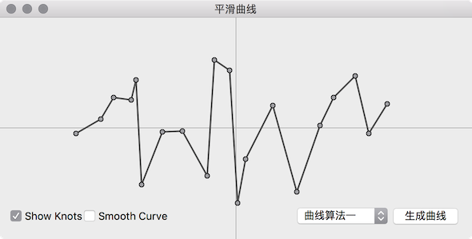
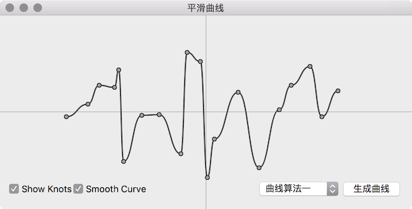
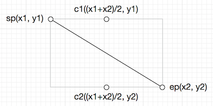
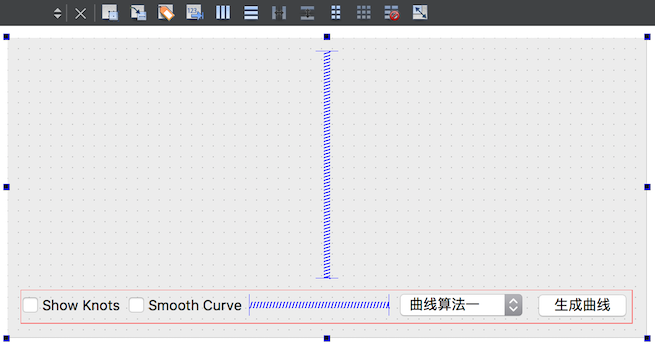

得到曲线上的点，画出曲线，这是一个很常见的需求。画曲线嘛，当然难不住我们，用 QPainter::drawLine() 把曲线上的点连起来不就好了？So easy，轻轻松松搞定，开开心心的交任务去了。

正在聚精会神炒股的老板一瞅，气不打一处来：“你这画的是什么鬼，这个线直来直去的，太不专业了”，抬头指着屏幕上的炒股软件，瞅着迷离的眼神：“看看人家的这个曲线，就像少女的皮肤般那么的柔顺、平滑”，口气马上一百八十度大转弯：“在看看你的，像八十岁老头的那样全是褶皱！” 擦完脸上的口水，赶快想办法去吧。
创建平滑曲线，有很多种方式，可以使用现成的库，例如 QWT，QCustomPlot 等，也可以研究平滑曲线的理论，实现平滑曲线的插值函数。这里我们提供二个实现，利用 QPainterPath，根据曲线上的点创建平滑曲线，他们各有利弊，使用分三步：
1 2 3 4 5 6 7 8 9 10 11 12 13 QList<QPointF> knots; knots << QPointF (x1, y1); ... knots << QPointF (xn, yn); QPainterPath smoothCurve1 = SmoothCurveGenerator1::generateSmoothCurve (knots); QPainterPath smoothCurve2 = SmoothCurveGenerator2::generateSmoothCurve (knots); painter.drawPath (smoothCurve1); painter.drawPath (smoothCurve2);
最后画出来的曲线效果如下，这次应该不会被喷了吧：

Qt 中可以使用 QPainterPath::cubicTo() 函数实现绘制平滑曲线，绘制平滑曲线的关键是控制点的计算，sp 为线段的起始点，ep 为线段的终点，c1，c2 为贝塞尔曲线的控制点，其坐标计算如下

类 SmoothCurveGenerator1 使用上面的原理生成平滑曲线
1 2 3 4 5 6 7 8 9 10 11 12 13 14 15 16 17 18 19 #ifndef SMOOTHCURVEGENERATOR1_H #define SMOOTHCURVEGENERATOR1_H #include <QList> #include <QPointF> #include <QPainterPath> class SmoothCurveGenerator1 {public : static QPainterPath generateSmoothCurve (const QList<QPointF> &points) }; #endif
1 2 3 4 5 6 7 8 9 10 11 12 13 14 15 16 17 18 19 20 21 22 #include "SmoothCurveGenerator1.h" QPainterPath SmoothCurveGenerator1::generateSmoothCurve (const QList<QPointF> &points) { if (points.size () == 0 ) { return QPainterPath (); } QPainterPath path (points[0 ]) ; for (int i = 0 ; i < points.size () - 1 ; ++i) { QPointF sp = points[i]; QPointF ep = points[i+1 ]; QPointF c1 = QPointF ((sp.x () + ep.x ()) / 2 , sp.y ()); QPointF c2 = QPointF ((sp.x () + ep.x ()) / 2 , ep.y ()); path.cubicTo (c1, c2, ep); } return path; }
接下来就介绍一下生成平滑曲线的具体使用方法，就是开头被喷的那个曲线图的平滑实现。
在 SmoothCurveWidget.ui 上如图放两个 QCheckBox，命名为 showKnotsCheckBox 和 showSmoothCurveCheckBox，QPushButton 用于点击重新生成曲线，ComboBox 用于选择生成曲线的算法：

下面是 SmoothCurveWidget.h, SmoothCurveWidget.cpp 和 main.cpp
1 2 3 4 5 6 7 8 9 10 11 12 13 14 15 16 17 18 19 20 21 22 23 24 25 26 27 28 29 30 31 32 33 34 #ifndef SMOOTHCURVEWIDGET_H #define SMOOTHCURVEWIDGET_H #include <QWidget> #include <QList> #include <QPointF> #include <QPainterPath> namespace Ui {class SmoothCurveWidget ;} class SmoothCurveWidget :public QWidget { Q_OBJECT public : explicit SmoothCurveWidget (QWidget *parent = 0 ) ~SmoothCurveWidget (); protected : void paintEvent (QPaintEvent *event) Q_DECL_OVERRIDE private slots: void generateCurves () private : Ui::SmoothCurveWidget *ui; QList<QPointF> knots; QPainterPath smoothCurve1; QPainterPath smoothCurve2; QPainterPath nonSmoothCurve; }; #endif
1 2 3 4 5 6 7 8 9 10 11 12 13 14 15 16 17 18 19 20 21 22 23 24 25 26 27 28 29 30 31 32 33 34 35 36 37 38 39 40 41 42 43 44 45 46 47 48 49 50 51 52 53 54 55 56 57 58 59 60 61 62 63 64 65 66 67 68 69 70 71 72 73 74 75 76 77 78 79 80 #include "SmoothCurveWidget.h" #include "ui_SmoothCurveWidget.h" #include "SmoothCurveGenerator1.h" #include "SmoothCurveGenerator2.h" #include <QPainter> #include <QtGlobal> #include <QDateTime> SmoothCurveWidget::SmoothCurveWidget (QWidget *parent) : QWidget (parent), ui (new Ui::SmoothCurveWidget) { ui->setupUi (this ); connect (ui->generateCurveButton, SIGNAL (clicked (bool )), this , SLOT (generateCurves ())); connect (ui->showKnotsCheckBox, SIGNAL (clicked (bool )), this , SLOT (update ())); connect (ui->showSmoothCurveCheckBox, SIGNAL (clicked (bool )), this , SLOT (update ())); connect (ui->smoothCurveGeneratorComboBox, SIGNAL (currentIndexChanged (int )), this , SLOT (update ())); ui->generateCurveButton->click (); } SmoothCurveWidget::~SmoothCurveWidget () { delete ui; } void SmoothCurveWidget::paintEvent (QPaintEvent *) QPainter painter (this ) ; painter.setRenderHint (QPainter::Antialiasing); painter.translate (width () / 2 , height () / 2 ); painter.scale (1 , -1 ); painter.setPen (QColor (180 , 180 , 180 )); painter.drawLine (-500 , 0 , 500 , 0 ); painter.drawLine (0 , 500 , 0 , -500 ); painter.setPen (QPen (QColor (80 , 80 , 80 ), 2 )); if (ui->showSmoothCurveCheckBox->isChecked () && ui->smoothCurveGeneratorComboBox->currentIndex () == 0 ) { painter.drawPath (smoothCurve1); } else if (ui->showSmoothCurveCheckBox->isChecked () && ui->smoothCurveGeneratorComboBox->currentIndex () == 1 ) { painter.drawPath (smoothCurve2); } else { painter.drawPath (nonSmoothCurve); } if (ui->showKnotsCheckBox->isChecked ()) { painter.setPen (Qt::black); painter.setBrush (Qt::gray); foreach(QPointF p, knots) { painter.drawEllipse (p, 3 , 3 ); } } } void SmoothCurveWidget::generateCurves () qsrand (QDateTime::currentDateTime ().toMSecsSinceEpoch ()); int x = -200 ; knots.clear (); while (x < 200 ) { knots << QPointF (x, qrand () % 200 - 100 ); x += qMin (qrand () % 30 + 5 , 200 ); } smoothCurve1 = SmoothCurveGenerator1::generateSmoothCurve (knots); smoothCurve2 = SmoothCurveGenerator2::generateSmoothCurve (knots); nonSmoothCurve = QPainterPath (); nonSmoothCurve.moveTo (knots[0 ]); for (int i = 1 ; i < knots.size (); ++i) { nonSmoothCurve.lineTo (knots[i]); } update (); }
1 2 3 4 5 6 7 8 9 10 11 #include "SmoothCurveWidget.h" #include <QApplication> int main (int argc, char *argv[]) QApplication a (argc, argv) ; SmoothCurveWidget w; w.show (); return a.exec (); }
为了让程序更具有普谝性，曲线上的点采用随机生成，所以每次生成的曲线是不一样的，选中 “Smooth Curve” 时显示为平滑曲线，没有选中则显示为非平滑的曲线。选中 “Show knots” 显示曲线上的点，反之则不显示。
如果仔细观察 SmoothCurveGenerator1 生成的平滑曲线，会发现平滑曲线段之间会有很多小段的抖动，下面提供另一个也是使用 QPainterPath 实现平滑曲线的方法，可以解决平滑曲线段之间的抖动问题，但是曲线段在比较陡时，曲线上的值可能会超出曲线原来值的范围，但是总体上看效果更好，改编自 http://www.codeproject.com/Articles/31859/Draw-a-Smooth-Curve-through-a-Set-of-D-Points-wit，核心是使用曲线上的点计算出贝塞尔曲线的两个控制点，然后使用贝塞尔曲线生成平滑曲线，很惭愧的是生成控制点的算法细节我没看懂，只不过是作了一次搬运工，把程序移植到了 Qt 上，有兴趣的话，请自行参考吧，不过即使没有理解控制点的生成算法也不影响使用。
1 2 3 4 5 6 7 8 9 10 11 12 13 14 15 16 17 18 19 20 21 22 23 24 25 26 27 28 29 30 31 32 33 34 35 36 37 38 #ifndef SMOOTHCURVEGENERATOR2_H #define SMOOTHCURVEGENERATOR2_H #include <QList> #include <QPointF> #include <QPainterPath> class SmoothCurveGenerator2 {public : static QPainterPath generateSmoothCurve (const QList<QPointF> &points) private : static void calculateFirstControlPoints (double * &result, const double *rhs, int n) static void calculateControlPoints (const QList<QPointF> &knots, QList<QPointF> *firstControlPoints, QList<QPointF> *secondControlPoints) }; #endif
1 2 3 4 5 6 7 8 9 10 11 12 13 14 15 16 17 18 19 20 21 22 23 24 25 26 27 28 29 30 31 32 33 34 35 36 37 38 39 40 41 42 43 44 45 46 47 48 49 50 51 52 53 54 55 56 57 58 59 60 61 62 63 64 65 66 67 68 69 70 71 72 73 74 75 76 77 78 79 80 81 82 83 84 85 86 87 88 89 90 91 92 93 94 95 96 97 98 99 100 101 102 103 104 105 106 #include "SmoothCurveGenerator2.h" QPainterPath SmoothCurveGenerator2::generateSmoothCurve (const QList<QPointF> &points) { QPainterPath path; int len = points.size (); if (len < 2 ) { return path; } QList<QPointF> firstControlPoints; QList<QPointF> secondControlPoints; calculateControlPoints (points, &firstControlPoints, &secondControlPoints); path.moveTo (points[0 ].x (), points[0 ].y ()); for (int i = 0 ; i < len - 1 ; ++i) { path.cubicTo (firstControlPoints[i], secondControlPoints[i], points[i+1 ]); } return path; } void SmoothCurveGenerator2::calculateFirstControlPoints (double *&result, const double *rhs, int n) result = new double [n]; double *tmp = new double [n]; double b = 2.0 ; result[0 ] = rhs[0 ] / b; for (int i = 1 ; i < n; i++) { tmp[i] = 1 / b; b = (i < n - 1 ? 4.0 : 3.5 ) - tmp[i]; result[i] = (rhs[i] - result[i - 1 ]) / b; } for (int i = 1 ; i < n; i++) { result[n - i - 1 ] -= tmp[n - i] * result[n - i]; } delete [] tmp; } void SmoothCurveGenerator2::calculateControlPoints (const QList<QPointF> &knots, QList<QPointF> *firstControlPoints, QList<QPointF> *secondControlPoints) int n = knots.size () - 1 ; for (int i = 0 ; i < n; ++i) { firstControlPoints->append (QPointF ()); secondControlPoints->append (QPointF ()); } if (n == 1 ) { (*firstControlPoints)[0 ].rx () = (2 * knots[0 ].x () + knots[1 ].x ()) / 3 ; (*firstControlPoints)[0 ].ry () = (2 * knots[0 ].y () + knots[1 ].y ()) / 3 ; (*secondControlPoints)[0 ].rx () = 2 * (*firstControlPoints)[0 ].x () - knots[0 ].x (); (*secondControlPoints)[0 ].ry () = 2 * (*firstControlPoints)[0 ].y () - knots[0 ].y (); return ; } double *xs = 0 ; double *ys = 0 ; double *rhsx = new double [n]; double *rhsy = new double [n]; for (int i = 1 ; i < n - 1 ; ++i) { rhsx[i] = 4 * knots[i].x () + 2 * knots[i + 1 ].x (); rhsy[i] = 4 * knots[i].y () + 2 * knots[i + 1 ].y (); } rhsx[0 ] = knots[0 ].x () + 2 * knots[1 ].x (); rhsx[n - 1 ] = (8 * knots[n - 1 ].x () + knots[n].x ()) / 2.0 ; rhsy[0 ] = knots[0 ].y () + 2 * knots[1 ].y (); rhsy[n - 1 ] = (8 * knots[n - 1 ].y () + knots[n].y ()) / 2.0 ; calculateFirstControlPoints (xs, rhsx, n); calculateFirstControlPoints (ys, rhsy, n); for (int i = 0 ; i < n; ++i) { (*firstControlPoints)[i].rx () = xs[i]; (*firstControlPoints)[i].ry () = ys[i]; if (i < n - 1 ) { (*secondControlPoints)[i].rx () = 2 * knots[i + 1 ].x () - xs[i + 1 ]; (*secondControlPoints)[i].ry () = 2 * knots[i + 1 ].y () - ys[i + 1 ]; } else { (*secondControlPoints)[i].rx () = (knots[n].x () + xs[n - 1 ]) / 2 ; (*secondControlPoints)[i].ry () = (knots[n].y () + ys[n - 1 ]) / 2 ; } } delete xs; delete ys; delete [] rhsx; delete [] rhsy; }
相信还有其他用于生成平滑曲线的方法，甚至可以同时解决 SmoothCurveGenerator1 和 SmoothCurveGenerator2 的问题，这个需要大家继续深入的研究了。